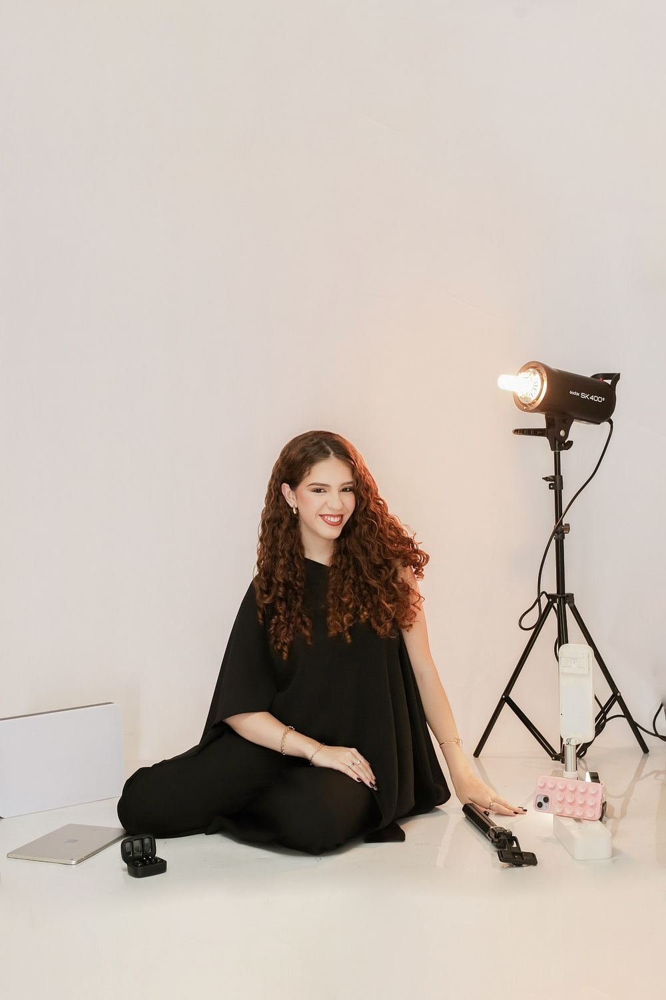
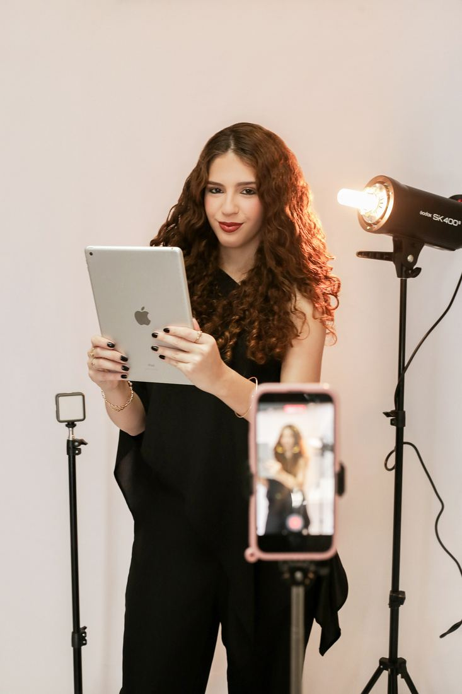

Você está pronto para eternizar?
Ana Luísa · Storymaker, Videomaker Mobile e Social Media
Conteúdo estratégico e coberturas em tempo real para registrar o que importa na sua marca, no seu evento e na sua história.

Três frentes, um só olhar
Cartas na mesa
Um recorte do meu universo criativo.

Minha vida profissional não começou em uma empresa. Começou servindo na igreja.
Foi ali que eu entendi: tudo comunica!